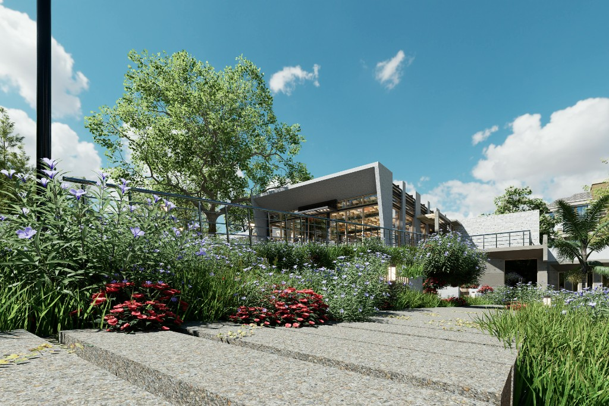

01 写真映えしない
施工写真はたくさんあるのに、サイトで魅力的に見せられていない。テンプレートの枠に写真を当てはめるだけでは、現場の質感や仕上がりの美しさは伝わりません。外構は特に「見た目で選ばれる」業種。写真の見せ方がそのまま受注に影響します。

こんなお悩みありませんか？
施工写真はたくさんあるのに、サイトで魅力的に見せられていない。テンプレートの枠に写真を当てはめるだけでは、現場の質感や仕上がりの美しさは伝わりません。外構は特に「見た目で選ばれる」業種。写真の見せ方がそのまま受注に影響します。
外構を検索するお客様の7〜8割はスマートフォンを使っています。文字が小さい、レイアウトが崩れる、ボタンが押しにくいといった問題は、そのまま問い合わせの機会損失につながります。スマホ体験の質が、集客数を左右します。
「坂戸市 外構工事」「川越 エクステリア 見積もり」といった地域キーワードで検索上位に出るためには、Webサイトの構造・テキスト量・Googleビジネスプロフィール（GBP）の最適化が必要です。制作だけでなく、公開後のSEO・MEO対応まで一緒に取り組みます。
サイトに人が来ていても、問い合わせボタンが見つかりにくい・フォームが複雑で離脱が起きることも。見積もり依頼や施工事例から電話につながる導線設計が重要です。
施工事例の追加が制作会社への依頼コストで後回しになりがち。月額保守プランで軽微な修正・更新を月1〜3回対応し、素早く反映できる体制を整えています。
訪問者数や流入経路が把握できないと改善のしようがありません。GA4による月次アクセスレポートで、データをもとに次の一手を一緒に考えます。
Georji & Co. が提供できること
外構・エクステリアは「施工写真」と「信頼感」が重要です。 Georji & Co.ではテンプレートを使わず、御社のブランドと商圏に合わせてゼロから設計します。 HTML/CSS/JSの手書きコードで実装するため、表示速度が速く、Googleの評価にも強いサイトになります。 制作から公開後の保守・SEO・MEO対応まで、代表が一貫して担当し、お客様との信頼を一つずつ積み重ねていきます。
01
写真が映える大判レイアウトで、施工のクオリティを正面から伝えます。
02
全デバイスで崩れない、読みやすいレイアウトを手書きコードで実装します。
03
電話ボタン・フォームを見やすい位置に配置し、行動につながるページを設計します。
04
GA4でアクセス状況を毎月レポート。効果を見える化し、改善提案も行います。
制作実績
いずれも埼玉県内の外構・エクステリア会社様のコーポレートサイトです。
「自然と暮らしをデザインする」をコンセプトに持つ外構・エクステリアブランドのコーポレートサイト。単なる施工会社ではなく、暮らし全体を提案するブランドとして見せるため、余白と写真を活かした構成で設計しました。ブランドの哲学と施工の質が、はじめて訪れた方にも自然と伝わることを意識しています。
サイトを見る制作の流れ
複雑な手続きや不要な打ち合わせはありません。明確なコミュニケーションと誠実な仕事で、スムーズに進めます。
01
事業の目的、ターゲット、現状の課題などをしっかり伺います。初回相談は無料です。
02
ブランドに合ったビジュアル方向性を提案します。コーディング前に確認・修正できます。
03
クリーンなコードで実装。ドメイン設定から公開まで一貫対応します。
04
公開後も継続サポート。月次レポートで効果を見える化します。
初回相談無料
「今のサイトに問い合わせが来ない」「Googleで競合に負けている」「施工事例をもっと魅力的に見せたい」など、どんなご相談でも構いません。 地域に根ざして長く愛される企業の力になりたいという思いで、外構・エクステリア会社様のご相談をお待ちしています。 初回相談は無料です。